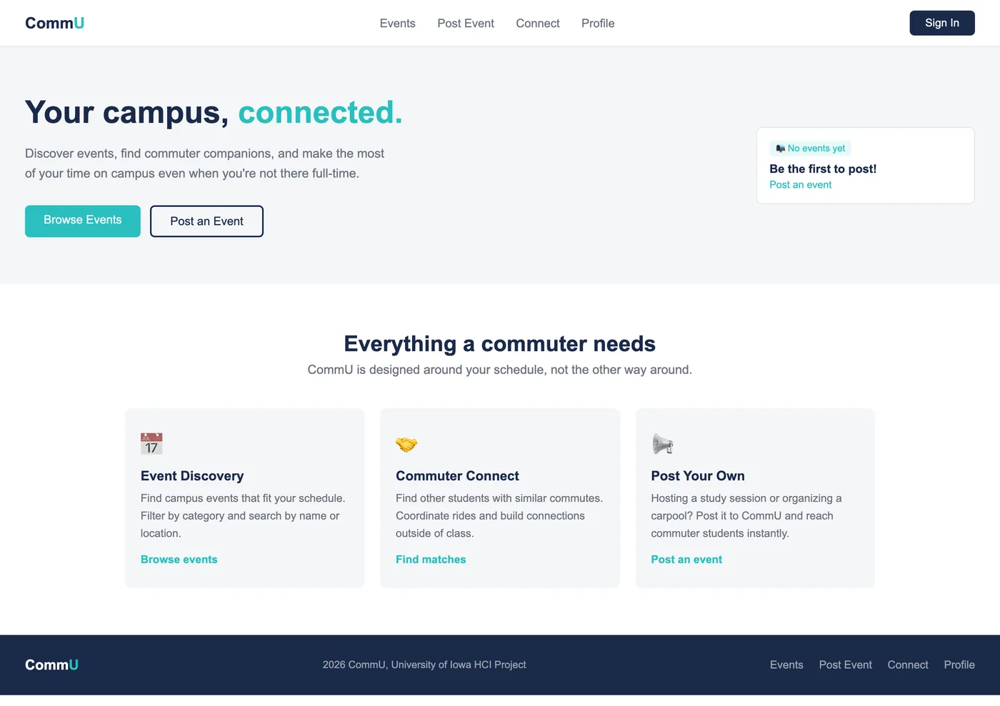
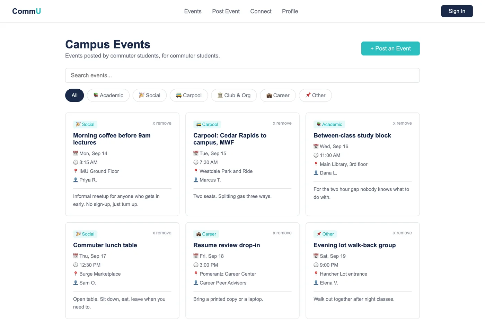
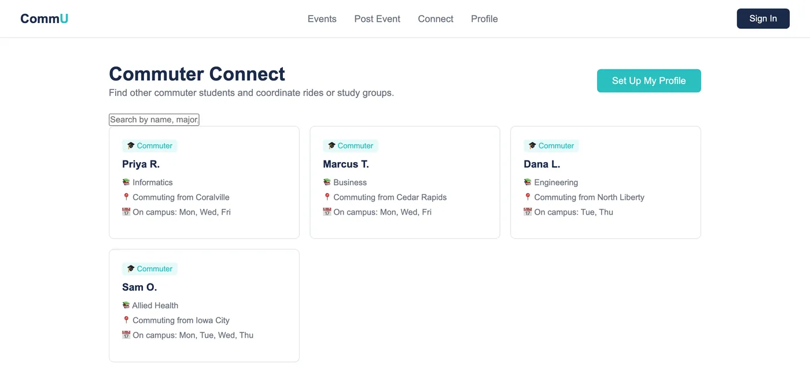

Research and design · Iowa, 2026
CommU
Students who commute to campus arrive for class and leave again. The problem is not that they do not want to belong. It is that belonging takes time they do not have.
- Role
- Sole researcher, designer and developer. I recruited and ran the interviews, analysed them, designed the product, and built it.
- Constraint
- A semester, five participants, and a course requirement that the result be a working web application rather than a prototype in a design tool.
- Outcome
- Three findings from nineteen questions, and a working app built around them. One finding changed what got built. The other two confirmed what I had already proposed, which is worth saying rather than dressing up.
The gap nobody designs for
Campus engagement is built for people who live on campus. Events assume you are already there, clubs meet at hours that assume you have nowhere to drive back to, and the tools that announce any of it assume you are checking.
A student living five minutes away in an apartment can feel as far outside it as someone driving an hour each way. That was the premise I started with, and the research existed to find out whether it held and what shape it actually had.
Who I talked to, and how
Five participants, recruited through personal networks and in person. Four commute to campus. The fifth lives on campus and was included deliberately, because he works with commuters and sees the same problem from the other side. A study made only of people who agree with the premise cannot disconfirm it.
| ID | Institution | Field | Housing | Commute |
|---|---|---|---|---|
| P1 | Large state university | Criminal justice | Off campus | 30 min drive |
| P2 | Community college | Business management | Off campus | 1 hour drive |
| P3 | Mid-size state university | Physical sciences, engineering | On campus | Walks on campus |
| P4 | Mid-size state university | Engineering | Off campus | 10 to 15 min walk |
| P5 | Community college | Allied health | Off campus | 30 min drive |
- 19questions across five sections
- 5participants, three institutions
- 15 to 30minutes per interview
- 3themes after analysis
Semi-structured, so the nineteen questions were a guide rather than a script. When someone said something I had not expected I followed it and skipped what no longer fit. Interviews ran in person and over video, whichever suited the participant. Every session opened the same way: what the study was for, that responses would be anonymous, consent to record, and that there were no right answers.
Interviews came in shorter than the twenty-five to forty minutes I had planned for. Some people answer briefly and the conversation is genuinely over. Padding it would have produced transcript, not data.
What they said
Theme 1. Arrive, attend, leave
Time on campus was purely functional. Participants showed up for an obligation and left the moment it ended, shaped by a long drive, a shift starting soon, or simply having no reason to stay. Several had never explored what their school offered. Not from indifference. There was no room in the day for it.
I usually just show up a couple minutes before class and after school I have to go to work, which is about 30 minutes away. So, I usually don’t spend much time on campus.
P2, community college, one hour commute
Theme 2. Campus information is hard to find
Nobody had a reliable picture of what was happening outside their own classes. Finding out meant assembling it from emails they mostly ignored, friends who happened to mention something, and posters on walls they happened to pass.
Sometimes I get sent an email about upcoming events, other times it’s word of mouth through friends, and posters that are around buildings.
P4, engineering, walks in
Theme 3. Willing to connect, with nowhere to do it
This is the one that mattered. Given how much isolation people described, I expected some reluctance. There was almost none. Asked directly whether they would meet others in the same situation if it were easier, nearly everyone said yes immediately. The barrier was not motivation. It was that no place existed.
Yes, I would love to connect with people. I love meeting new people, but I just don’t put myself out there. If there’s an easier way, then yeah.
P5, allied health, 30 minute drive
The finding that changed the build
My proposal described CommU as a way to discover events. All three of its stated contributions were about consumption: find events in one place, see what is happening, close the visibility gap. Students would read a feed somebody else filled.
Then P4, asked what one thing he would change about the off-campus experience, answered with something I had not designed for at all.
It would be to host some sort of event to meet other people, because there have been people that I’ve met that live in my same complex and I had no idea.
P4, on what he would change
He did not want a better feed. He wanted to call the meeting himself. And the reason was specific: the people he wanted to meet were already near him, and the system had no way to tell either of them.
That reframed the product. If the finding is that these students are willing but have no venue, then a read-only calendar reproduces the exact problem, because somebody still has to be the institution and post to it. So posting became a first-class action rather than an admin feature: any student can create an event, it appears immediately, and it expires on its own once the date passes so the list stays honest without anybody maintaining it.
Themes 1 and 2 confirmed what I had already proposed. Only theme 3 moved the design, and it moved it because of one answer from one participant to the last question of the interview. Five people is enough to find a direction and not enough to be sure of one. If I ran this again I would recruit for disagreement on purpose, the way I did with P3, rather than once.
What I built
Eight pages of vanilla HTML, CSS and JavaScript, with a separate Flask and MongoDB backend. Each of the three surfaces below answers one of the three findings, and nothing was built that no finding asked for.



The detail I am most pleased with is the smallest. A profile leads with which days you are on campus, not with your year or your interests. Theme 1 said the binding constraint is the schedule, so the schedule is what the card leads with.
What I would do differently
I never tested it with the people I interviewed. The project ran research, then design, then build, and finished. The right shape would have been to take the events page back to P2 and P5 and watch them use it, because the whole premise is that these people have no time, and I never measured whether the thing I built costs them any.
I would recruit for the disconfirming case more than once. Including P3 was the best decision in the study and I only made it a single time.
The empty state is the real first run. Every screenshot above has seeded content. On a genuinely new install this app shows an empty list to a student who has ten minutes between classes, and nothing about the research told me how to earn that person's second visit. That is the first thing I would work on.